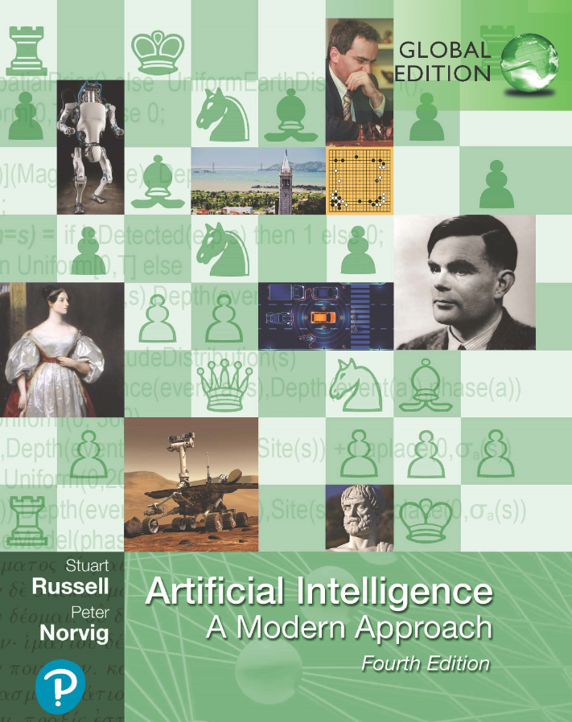
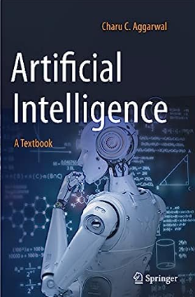
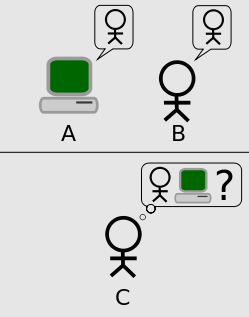
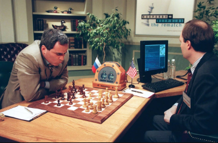
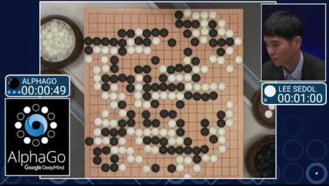
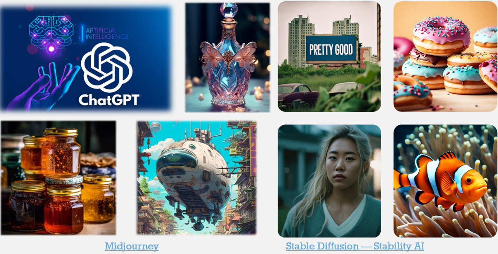
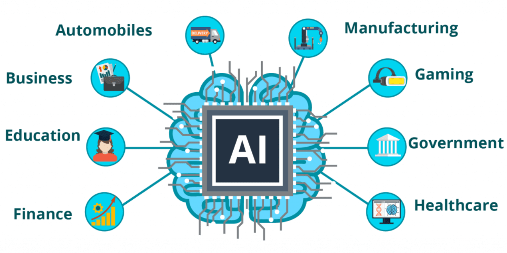

v.
Reference Materials
-
Artificial Intelligence: A Modern Approach - Stuart J. Russell and Peter Norvig, 4th Edition, 2022 
- Dive into Deep Learning
- Zhang, Aston, Lipton, Zachary C. et.al (2021), arXiv preprint arXiv:2106.11342
- Neural Networks and Deep Learning
- online book by Michael Nielsen
Alternative Materials
-
Artificial Intelligence: A Textbook - Charu C. Aggarwal, 2021. Springer. 
- The Hundred-Page Machine Learning
- online book by Andriy Burkov
- Deep Learning
- Ian Goodfellow and Yoshua Bengio and Aaron Courville (2016), MIT Press
-
Online Courses: - Various lectures are available in online platforms, e.g Udacity, Coursera, edX
Course Structure
Core part of
- Introduction to AI & ML
- Machine Learning Fundamentals
- Supervised Learning Algorithms
- Neural Networks & Deep Learning
- Unsupervised Learning Algorithms
- Reinforcement Learning
- Transfer Learning
- Convolutional Neural Networks
- Generative Models
Introduction to AI & ML
- The
definition : what is Artificial Intelligence (AI), Machine Learning (ML), and Deep Learning (DL)? - The
evolution of AI -> ML -> DL - The
relationship between AI, ML, and DL - The
applications of AI, ML, and DL -
Why should we learn AI?
What is "Classical" AI?
What is AI?
- Simulating human brains or human intelligence
(?) - Performing tasks by machine (or software) which would ordinarily require human intelligence
- Making decisions to achieve goals
What is AI? (cont.)
- Programming machines to learn by themselves
(?) - Machine Learning (ML) is an important sub-set of AI, but there are many other AI techniques.
- We'll learn ML in the study block 2.
What is AI? (cont.)
- Programming machines to possess general intelligence, self-awareness, consciousness
(?) - Dream too
BIG - Programming machines to carry out (or learn to carry out) a specific type of task
What is classical AI?
- Also know as
Good Old Fashioned AI Symbolic AI - Based on symbolic ("human-readable") representations of problems, logical systems, search spaces
- As opposed to machine learning, evolutionary algorithms etc. which tend to be
black-box next study block
Applications of AI in Games
- Enemies and other NPCs
- Opponents in (board, card, strategy) games
- Automated play testing
- Directors, hints, adaptive difficulty
- Procedural content generation
- Content production tools
- Procedural narrative
- Agent-based simulations
- ...
Why game AI?
- Games are a useful testbed for new AI technologies
- Game theory is a useful mathematical abstraction for many types of problem
- Game AI is more than pure problem solving - it needs to create an entertaining experience
AI Architectures
Rule-based AI
- Generally implemented as
if - Triggers can be complicated e.g. based on raycasts
Finite State Machines
Behaviour Trees
Multi-agent approaches
Game Tree Search
Planning
Machine Learning
AI Architectures Summary
- Can roughly be divided into
hand-authored - Rule-based, FSM, behaviour trees
- ... and
computational intelligence (CI) - Search, planning, machine learning
- Depends on if you want to
design the AI behaviours yourself, or let thememerge from the system -
Predictability and authorial control versusadaptability and novelty - Can also combine the two, e.g. use a rule-based system to constrain a CI system
A brief history of AI
AI in Early Days
-
1000BC: A life-sized automaton - marvellous invention created by a Chinese artificerYan Shi . -
400BC: A mechanical pigeon - created by a friend of the famous Greek philosopherPlato . -
1495: Leonardo's Knight - a mechanical knight designed and possibly created byLeonardo da Vinci . -
1929: Gakutensoku - the 1st Japanese robot by ProfessorMakoto Nishimura . -
1949: Giant Brains, or Machines that Think Edmund Callis Berkley .
Birth of Modern AI
-
1950: Computer Machinery and Intelligence -Alan Turing proposed a test of machine intelligence (Turing Test). -
1952: Program to play checkers - first to ever learn the game independently byArthur Samuel . -
1956: Artificial Intelligence - the term was coined in Dartmouth workshop byJohn McCarthy and others.
Turing Test

Can
Modern AI

John McCarthy, Marvin L. Minsky, Nathaniel Rochester, and Claude E. Shannon (1956)
Key requirements of AI
- Abstractions
- Automatic computer
- Creativity
- Language understanding
-
Use of neuron nets - Computational efficiency
-
Self-improvement - machine learning
AI Development Stages
3 stages:
Stage I: 1950's - 1980's
(automation)
-
1951: 1st working AI Programme - can play checkers and chess at the University of Manchester. -
1957: 1st artificial neural network - designed byFrank Rosenblatt . -
1967: Nearest neighbour -
1979: Stanford Cart
Samuel's Checkers Program (1952-1962)
Stage II: 1980's - 2010's
(learning)
-
1981: Explanation Based Learning (EBL) - learnt general problem-solving techniques by observing human solutions. -
1985: NETtalk Terry Sejnowski andCharles Rosenberg . -
1989: CNN - for recognising images byYann LeCun, Yoshua Bengio , andPatrik Haffner . -
1997: Deep Blue -
2006: Deep Learning Geoffrey Hinton to explain new algorithms that empower computers to distinguish objects and images and video.
IBM's Deep Blue (1997)
Stage III: 2010's - now
-
2011: IBM Watson -
2014: GAN Ian Goodfellow . -
2016: Google AlphaGo Lee Sedol -A historical match! -
2017: Google AlphaGo Ke Jie . -running on a single computer! -
2018: GPT model OpenAI -a big milestone! -
2021: DALL-E OpenAI .
Stage III: 2010's - now
(intelligence)
-
2014: GAN Ian Goodfellow . -
2016: Google AlphaGo Lee Sedol .-A historical match! -
2017: Google AlphaGo Ke Jie . -running on a single computer! -
2018: GPT model OpenAI . -
2023: ChatGPT3, ChatGPT4 OpenAI .
Google's AlphaGO (2016)
ChatGPT-3 (2023)
Generative Models (2023)
The AI Continuum
-
A ssistantI ntelligence:repetitive and standardised tasks, working from clearly defined rules. Humans are still making the key decisions. -Artificial Narrow Intelligence (ANI)
Examples: automated assembly line robots, software-based agents. -
A ugmentedI ntelligence:enhances the ability of humans to accomplish tasks - humans and machines learn from each other. -Artificial General Intelligence (AGI)
Examples: virtual assistants, some of generative design systems. -
A utonomousI ntelligence:some decision-making , but only after a human fully trusts the machine. -Artificial Super Intelligence (ASI)
Examples: auto-pilot and self-driven cars.
AI vs. ML vs. DL
AI -> ML -> DL
AI vs. ML vs. DL: Examples
-
Artificial Intelligence: try to play some games with well-defined rules likeChess, Checker, and Jeopardy; encode/decode information.
-
Machine Learning: helps to make decision based on knowledge learnt from big data, e.g.Spam email filters, Face detection, Hand-wirtten digits recognition, etc.
-
Deep Learning: be able to generate contents and be creative with some intelligence, e.g.GO, Poker; ChatGPT, Midjourney, Stable Diffusion; Self-Driving.
AI vs. ML vs. DL: Definitions
-
Artificial Intelligence: a programme that cansense, reason, act, and adapt .
-
Machine Learning: algorithms whose performanceimprove as they are exposed to more dataover time .
-
Deep Learning: subset of machine learning in whichmulti-layer neural networks learn from vast amounts of data.
AI Applications
 Source: https://leverageedu.com/{kind=link}
Why should we learn it?
 Source https://builtin.com/
Source https://builtin.com/
{kind=link}
The Abstract Model of AI

Questions?